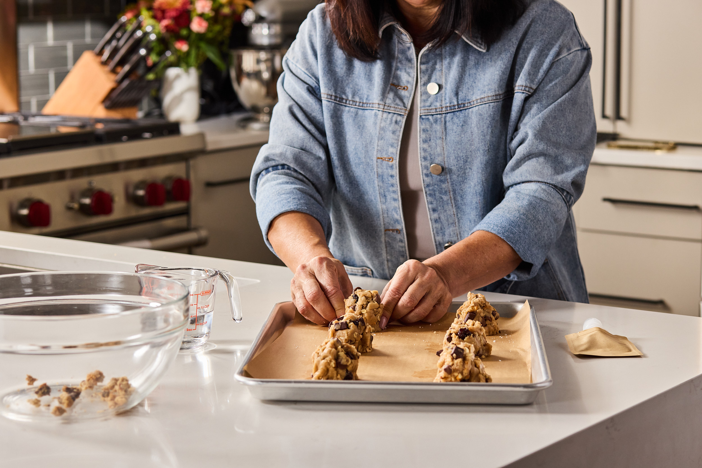

Minute 0
Mix
Both pouches, one full scoop of water — the scoop is in the box. Gloves on, hands are the mixer.
Drop 03 · The Everything
Drag it, or use the arrow keys — or .
Nothing else from your cupboard. One bowl, twenty-five minutes, six gourmet cookies.
Get on the listNone of them involve a measuring cup.
Minute 0
Both pouches, one full scoop of water — the scoop is in the box. Gloves on, hands are the mixer.

Minute 3
Six balls onto the parchment, already cut to your tray. Leave them room to spread.

Minute 10
350°F for 12 to 15 minutes. Out while the middles still look soft.
Butter and both sugars, creamed to the right consistency before it was sealed. That step is where home batches go wrong, and it is finished before the box reaches you.

Why it works at yours
Michele is a chemical engineer by trade and a baker by heart. She kept at this one until it stopped mattering whose hands were in the bowl.
Everything she pinned down is the part that now arrives pre-measured, so the only variable left is your oven.
Drop 03 opens soon